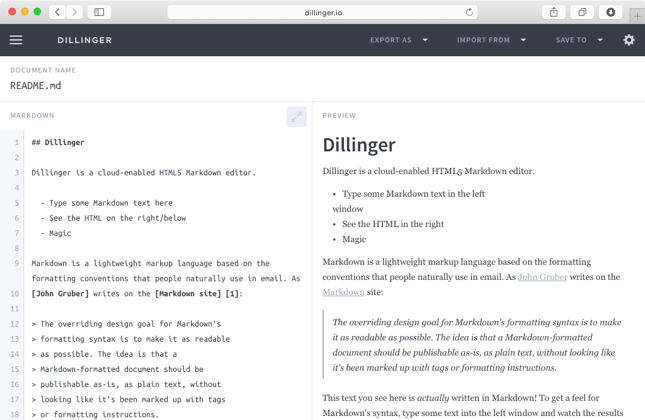

Dillinger.io
Dillinger is an Open Source Markdown editor based on Angular and Node.js.
View Case Study

Case Study of
App for Communities
Gemeinde-App addresses all communes which want to get their citizens involved in urban development and the events within the municipal. The app is an information medium for both residents and tourists.
Hybrid App Development, User Interface Design, User Experience Design, Mobile Development.
The iOS Version of Gemeinde-App was already on the Apple App-Store, and I was free to change the look and feel of the App targeted for Android Users, as they need a different User Experience than their iOS antagonists.
I’ve started by reading the offical Android User Interface Guidelines and doing some rough sketches on the way. Asking my Android-Buddys for their opionion on my ideas helped me alot to understand what changes had to be made.
The complete App was designed using Sketch by Bohemiam Coding. It turned out as a real time-saver, as exporting assets for all the different resolutions Android has to offer (like LDPI, MDPI up to XXXHDPI) was as easy as ticking a checkbox and telling it which resolution I want.
Using the iOS App and my sketches as a reference, I had finished the whole design of the app in under a week, by working on it as a side project.
Gemeinde-App for Android is powered by the Ionic framework, which is based on AngularJS and was specfically created for Mobile App Development.
With that, I had more time to concentrate on implementing the APIs, and not waste time on writing basic stuff like the router for navigation or another off-canvas menu, because Ionic had all this already built-in, I just had to customize it for my needs.
The whole development process got even faster when I had the Ripple Emulator and the LiveReload extension installed. That way I only had to test the app on a real device later on.
Dillinger is an Open Source Markdown editor based on Angular and Node.js.
View Case Study